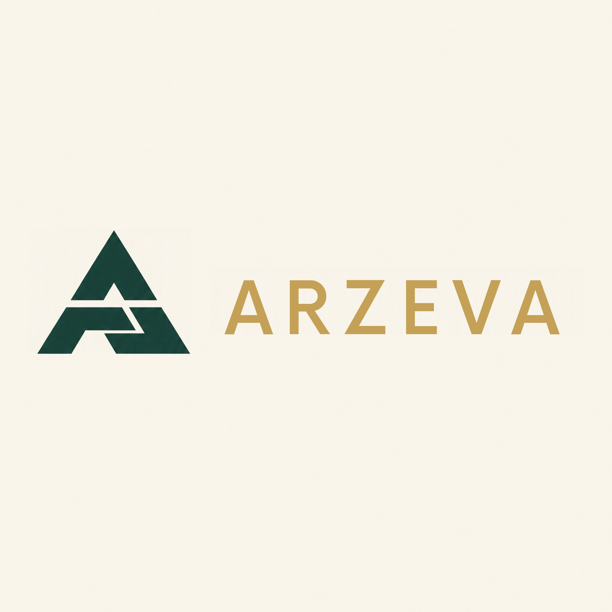

Portfolio
Personal Portfolio Website
A responsive personal website built to showcase my skills, projects, and professional identity.
- HTML
- CSS
- JavaScript
Information Systems student · Digital creator · Nigeria
Building digital experiences through web development, creative design, and AI-assisted workflows.
I enjoy turning ideas into useful digital experiences — from responsive websites and visual brand identities to practical AI-assisted solutions.
About me
I’m Abdullahi Muhammad Tukur, also known as Abdullahi MT — an Information Systems student at Umaru Musa Yar’adua University, Katsina, Nigeria.
I am developing my skills in web development, graphic design, and AI-assisted productivity. I enjoy turning ideas into practical digital experiences, from responsive websites to visual brand identities and creative technology projects.
Beyond creating digital solutions, I share educational content about technology, programming, and digital awareness.
My goal is to keep learning, build useful solutions, and contribute to the digital world through creativity, discipline, and continuous improvement.
Umaru Musa Yar’adua University, Katsina
B.Sc. Information Systems
2025–2029 (expected) · 100 Level

Building digital ideas and creative solutions through ARZEVA GLOBAL SERVICES.Skills
Services
Beginner-friendly projects where clear communication and clean execution matter most.
Responsive landing pages, personal portfolios, and business websites designed for usability and mobile accessibility.
Request a websiteProfessional flyers, social media graphics, logo concepts, and visual brand materials.
Request a designPractical AI-assisted content, productivity, and workflow solutions.
Discuss a workflowTechnology-focused content, visual communication, and digital assistance.
Ask for supportGallery
Logo and brand-mark concepts. These are concept pieces, not paid client work. Tap an image to view it full size.
Projects
Each card shows its real status. Links appear only where something public exists.
A responsive personal website built to showcase my skills, projects, and professional identity.
A responsive landing page for a fictional Katsina tailoring shop, with a booking form that sends the order to WhatsApp.
A fictional Katsina suya spot with a live order builder: tap to add items, see the total update, and send the order on WhatsApp.
A free tool that estimates zakat at 2.5% from savings, gold, silver, stock and debts, with a nisab check. Runs fully on the device.
A developing marketplace concept focused on trust, business connections, and digital commerce. Not yet released.
Selected visual branding and graphic design projects demonstrating composition, typography, and visual communication.
Practical experiments exploring AI-assisted productivity and digital workflows.
Ask me about thisTimeline
Certificates
Project enquiry
Tell me what you want to build, improve, or design. Let’s discuss a practical solution.
Contact
Have a project, collaboration idea, or professional enquiry? Get in touch.
arzevaglobalservices@gmail.com
Available for remote freelance projects · Katsina State, Nigeria